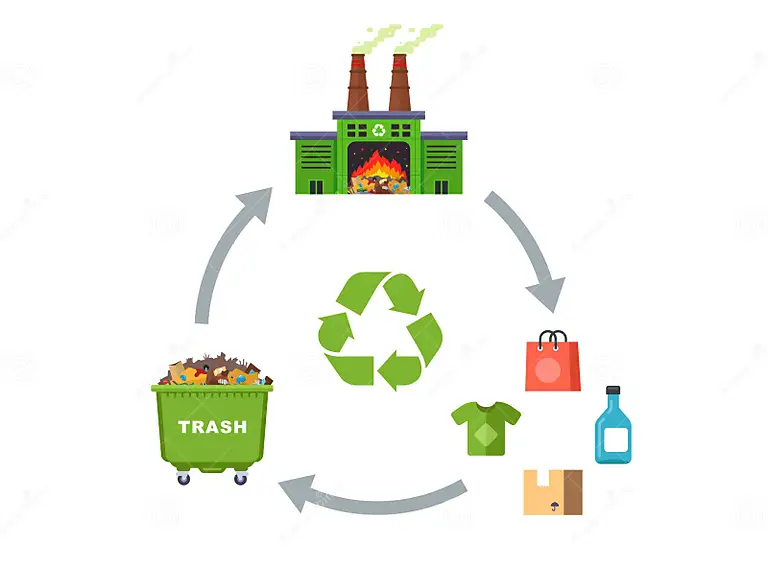
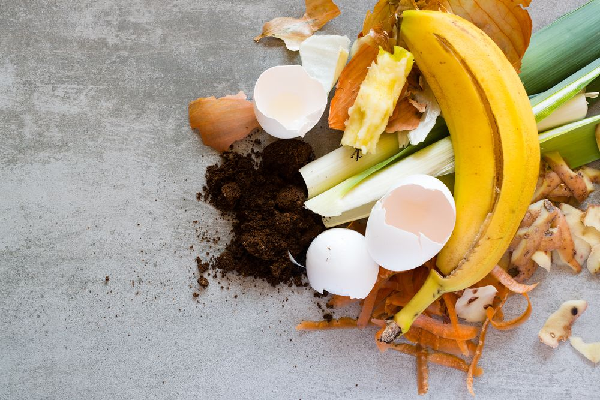
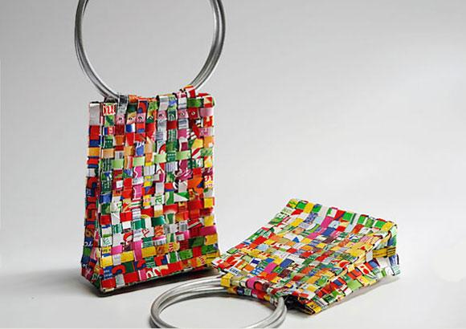

A reciclagem é o processo de transformar materiais descartados em novos produtos,
ajudando a reduzir o consumo de recursos naturais, diminuir a quantidade de resíduos
nos aterros e reduzir a poluição. Esse processo inclui etapas como coleta, triagem,
processamento e fabricação, permitindo que itens como papel, plástico, vidro e metais
sejam reutilizados de maneira sustentável. Além de preservar o meio ambiente, a
reciclagem gera economia de energia e impulsiona a criação de empregos, tornando-se
uma prática essencial para promover uma sociedade mais consciente e sustentável.
A reciclagem na arte urbana é uma poderosa ferramenta de transformação,
onde materiais descartados ganham nova vida e significado nas mãos de
artistas. Em cidades ao redor do mundo, esculturas, murais e instalações
são criados com plásticos, metais, papel e outros resíduos, promovendo
não apenas a sustentabilidade, mas também uma reflexão sobre o consumo
e o desperdício. Essa abordagem, além de trazer beleza e cultura para o
espaço urbano, conscientiza a população sobre a importância da reciclagem
e da preservação ambiental. A arte urbana reciclada se torna, assim, um
símbolo de resistência e de responsabilidade social, mostrando que até os
resíduos podem se transformar em algo belo e valioso.
Grupo 2 - Tecnologia e ciência da reciclagem
Cecília Helena,
Gabriel Augusto,
Kamilla,
Maria Fernanda,
Sophia.

Fonte: Google imagens
A tecnologia e a ciência da reciclagem evoluíram significativamente,
permitindo processos mais eficientes e sustentáveis no reaproveitamento
de materiais. Com avanços na separação e tratamento de resíduos, hoje é
possível reciclar uma variedade maior de produtos, incluindo plásticos
complexos e eletrônicos. Tecnologias como a inteligência artificial e a
robótica ajudam a identificar e classificar materiais com precisão,
aumentando a eficácia das operações de reciclagem. Já na área científica,
pesquisas em química e engenharia desenvolvem novos métodos para degradar
e reprocessar materiais, minimizando o impacto ambiental e reduzindo a
necessidade de recursos naturais. Essas inovações tornam a reciclagem
uma aliada cada vez mais forte no combate ao desperdício e na promoção
de um ciclo de consumo mais sustentável.
Grupo 3 - Reciclagem na alimentação orgânica e saudável
Arthur,
Athos,
Heitor,
Gabriel Sena,
Willian.

Fonte: Google imagens
A reciclagem na alimentação orgânica e saudável envolve a transformação
de resíduos alimentares em recursos valiosos e a produção de novos
alimentos. Cascas, restos de frutas, verduras e outros resíduos
orgânicos podem ser compostados para criar adubo natural, enriquecendo
o solo com nutrientes e fortalecendo o ciclo de cultivo sustentável,
além do aproveitamento de vários nutrientes para a produção de novos alimentos saudáveis.
Esse processo reduz a quantidade de lixo enviado aos aterros, diminuindo
emissões de gases como o metano. Além disso, incentiva uma cadeia alimentar
mais consciente e integrada ao meio ambiente, promovendo alimentos
livres de agrotóxicos e produtos químicos. A reciclagem orgânica contribui
para uma alimentação mais saudável, com menos impacto ambiental e maior
valorização dos recursos naturais.
Grupo 4 - Estação de montagem de recicláveis e itens que evitam gerar lixo
Uma estação de montagem de recicláveis é um local organizado onde resíduos são
separados, limpos e preparados para serem reaproveitados de forma eficiente.
Ela ajuda na triagem de materiais como plástico, papel, vidro e metal, garantindo
que cada tipo de resíduo siga para o destino correto de reciclagem. Além disso, o
uso de itens que evitam gerar lixo também é uma prática cada vez mais comum.
Produtos reutilizáveis, como garrafas, sacolas, canudos e talheres de metal ou
bambu, substituem itens descartáveis, reduzindo significativamente a produção de
lixo. Juntas, essas práticas incentivam uma economia mais circular e sustentável,
onde o consumo consciente e o reaproveitamento são priorizados.
Grupo 5 - Reciclagem na moda
Ana Júlia,
Bárbara,
Bianca,
Júlia B,
Júlia Viana,
Manuela.

Fonte: Google imagens
A reciclagem na moda, conhecida como "upcycling" ou moda sustentável, está
transformando a indústria, reduzindo o desperdício e promovendo um consumo
mais consciente. Em vez de descartar tecidos, roupas antigas ou sobras de
produção, estilistas e marcas criam novas peças a partir desses materiais,
dando-lhes um novo propósito e estilo. Além de diminuir a quantidade de resíduos
têxteis, essa prática poupa recursos naturais, como água e energia, que seriam
necessários para produzir novos tecidos. A reciclagem na moda também estimula a
criatividade e valoriza o artesanal, criando roupas únicas que carregam histórias
e incentivam uma relação mais sustentável com o vestuário.
Resultado da Mostra Cultural
Todos os recicláveis que serão utilizados durante a mostra cultural, após o evento,
serão reciclados novamente, doados para estações de reciclagem e para pessoas que fazem
esse trabalho por conta própria, evitando o desperdício dos mesmos.